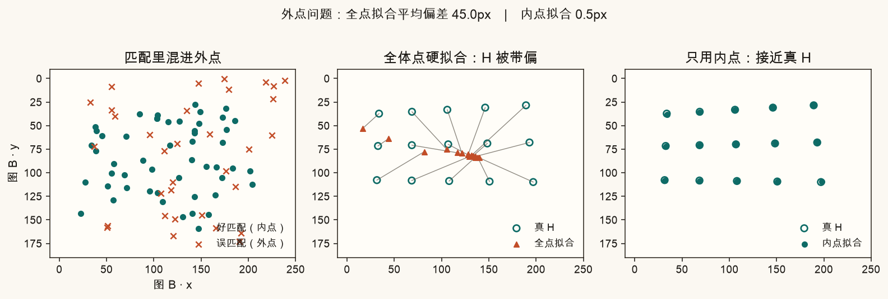
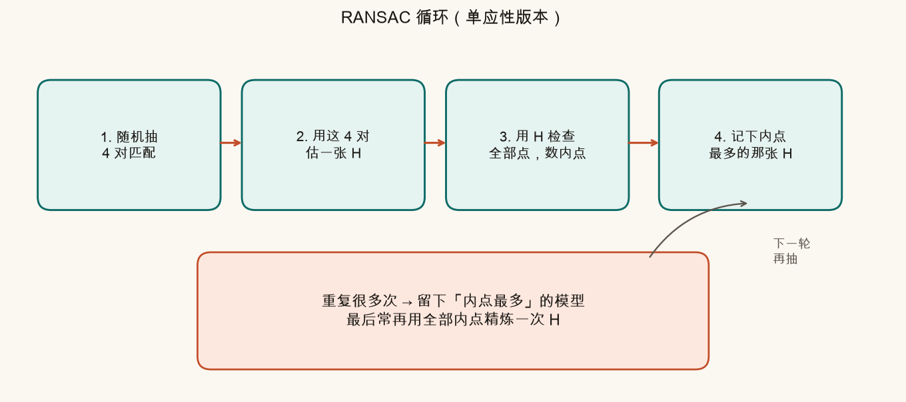
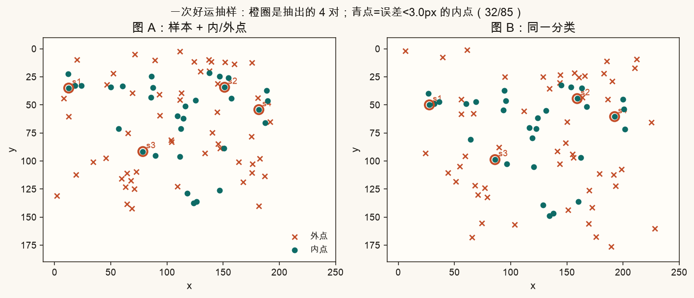
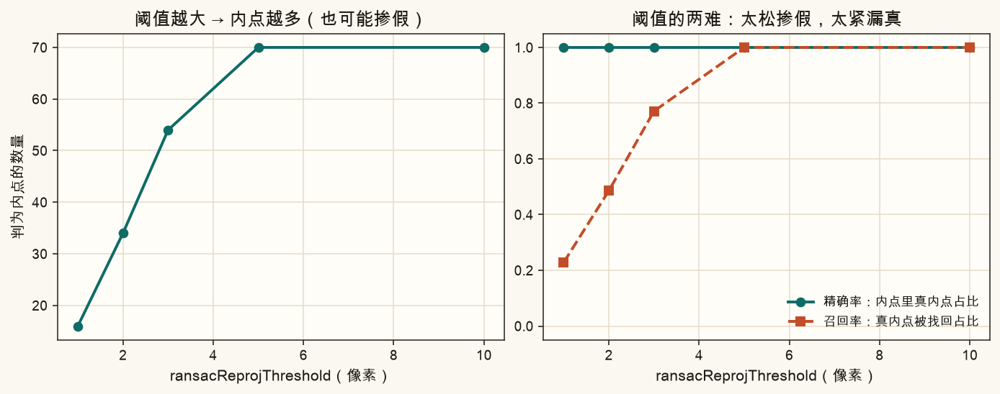
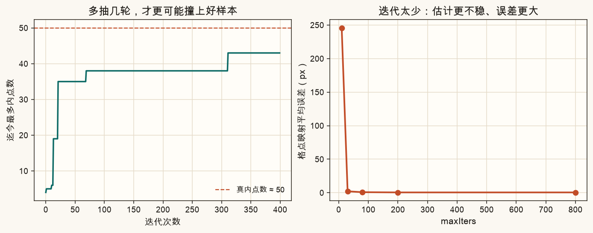
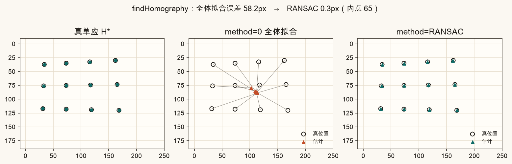
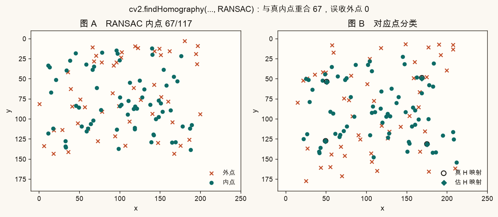
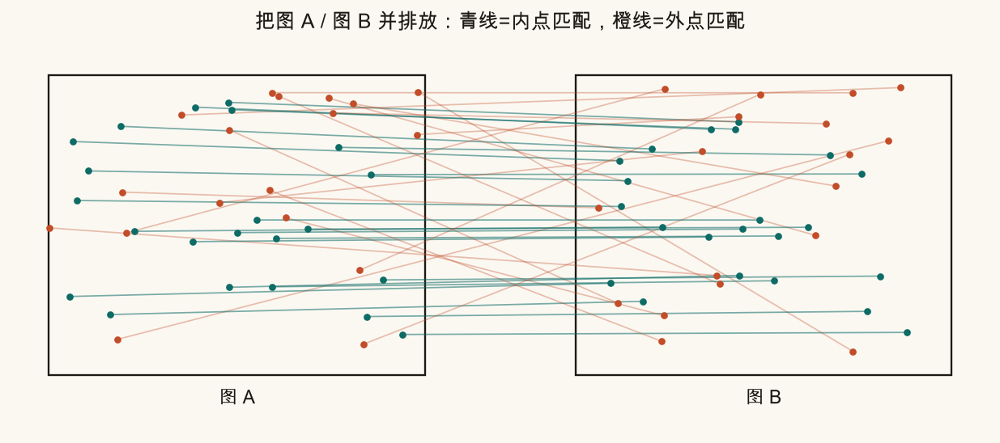

第 7 篇 · 鲁棒估计 · 约 55 分钟
第 6 篇匹配出来的点对，一定混着「对错」。错的叫外点；只要外点一多，直接最小二乘估出的单应 H 就会被带偏。本篇用白话把 RANSAC 拆开：随机抽 4 对 → 估一张 H → 数有多少点服这张 H → 多抽几轮，留下内点最多的那张。最后接到 OpenCV 的 findHomography(..., RANSAC)，并画出内点/外点。
两张图做特征匹配后，你会得到一堆「图 A 的点 ↔ 图 B 的点」。理想情况：每一对都对应同一物理点，且都服从同一张单应矩阵 H（第 3 篇：平面场景下，H 是两平面之间的通行证）。
现实里总会混进外点（outlier）：
与外点相对的是内点（inlier）：误差小、真的服从那张 H 的匹配。
生活类比：你想估「教室里同学们的平均身高」。混进几个写错成 3 米、0.2 米的数，普通平均会被严重拉偏。RANSAC 的思路不是「对每个数一视同仁」，而是先找出「看起来像一伙」的多数派，再只相信他们。
若对全部对应点做最小二乘估 H，外点会把矩阵拽歪。下图用合成数据演示：左是混了外点的匹配；中是全点硬拟合，格点映射偏了几十像素；右是「假如我们知道谁是内点」再拟合，几乎贴合真 H。

RANSAC = RAndom SAmple Consensus，随机抽样一致性。核心不是一次算完，而是：
多抽几次「最小样本」→ 每次估一个模型 → 看谁能解释最多的点 → 留下赢家
对单应性，最小样本是 4 对对应点（第 2、3 篇：H 有 8 自由度，一对点贡献 2 个约束）。
为什么「随机抽」管用？因为：
把算法写成四步口头禅，对着下图记：

getPerspectiveTransform）。重复 1–4 很多次。结束后：手里有一张「内点最多」的 H，以及一张 0/1 掩膜（谁是内点）。
重投影误差的白话定义：
误差 = ‖ H · pA − pB ‖ （像素距离）
先把图 A 的点 pA 用齐次坐标乘上 H，除以第三维得到预测位置；再和匹配给出的图 B 点 pB 比欧氏距离。小于阈值 → 内点。

坏运样本呢？四个点里只要有一个外点，候选 H 往往扭曲得很厉害，内点数会少得可怜。RANSAC 不怕坏运——它靠「多试几次」把好运捞上来。
两个旋钮最常调：
| 参数 | 白话 | 调大时 | 调小时 |
|---|---|---|---|
ransacReprojThreshold |
「服不服这张 H」的像素门槛 | 内点变多，可能把外点也收进来 | 更挑剔，真内点也可能被误杀 |
maxIters |
最多随机抽几轮 | 更稳，更可能撞上好样本；更慢 | 快，但外点多时容易「还没抽到就停了」 |
confidence |
希望「至少抽到一次好样本」的概率 | OpenCV 可能自动增加实际迭代 | 可能更早停 |
经验起点：图像特征匹配估 H 时，阈值常取 2～5 像素（看分辨率与噪声）；迭代几百到一两千。外点特别多时，要更多迭代，或先用 Lowe 比率等手段减外点（第 6 篇）。


理论旁注（可先跳过）：若内点比例为 w，一次抽 4 个全是内点的概率约为 w⁴。想让「至少成功一次」的概率 ≥ p，需要的迭代大约是 log(1−p) / log(1−w⁴)。w 越小，所需迭代暴涨——所以「先减外点、再 RANSAC」往往比「死加迭代」更香。
OpenCV 一句话完成「估 H + RANSAC」：
H, mask = cv2.findHomography(
src_pts, # (N,1,2) 或 (N,2)，图 A
dst_pts, # 对应的图 B
method=cv2.RANSAC,
ransacReprojThreshold=3.0,
maxIters=2000,
confidence=0.995,
)
# mask[i]=1 表示第 i 对是内点对照实验：同一批带外点的数据，method=0（全体最小二乘）会被带偏；method=cv2.RANSAC 能回到真值附近。

mask 是 RANSAC 的副产品，却是调试神器：把 mask==0 的匹配画成另一种颜色，一眼看出算法「扔掉了谁」。第 8 篇拼接时，也常用内点去估计画布范围、检查重叠是否够。
读图习惯：

findHomography(..., RANSAC) 的分类结果。本例与真内点重合 67，误收外点 0；估 H 映射（菱形）贴住真 H（空心圈）。
下面在浏览器里用合成对应点跑一版简化 RANSAC（与脚本同一思路：抽 4 点 → 估 H → 数内点）。调外点比例、阈值、迭代次数，观察内点数与「和真 H 的偏差」如何变。
source .venv/bin/activate # 若尚未激活
MPLCONFIGDIR=/tmp/mpl-cache python code/ch07_ransac.py终端应出现「自检通过」，并写出 ch07_outliers_problem.png、ch07_ransac_loop.png、ch07_sample_fit.png、ch07_inlier_outlier.png、ch07_match_lines.png、ch07_threshold.png、ch07_iterations.png、ch07_findHomography.png，以及你的 ch07_my_ransac.png。
打开 code/ch07_ransac.py，改顶部参数。它们只影响 ch07_my_ransac.png；课文对照图仍用固定种子重画。
OUTLIER_RATIO = 0.35 改成 0.05，再改成 0.55。外点很少时内点应接近全体；外点很多时，看误差是否变大、内点是否不稳。RANSAC_THRESH 从 1.0 调到 8.0。观察内点数上升时，与真 H 的格点误差是否开始变差（掺假信号）。RANSAC_ITERS 改成 20，再改成 1000。迭代太少时多跑几次脚本，误差会跳来跳去。NOISE_PX 改成 0.3 与 3.0。噪声大时，同样阈值下内点变少——阈值要跟着噪声一起想。先自己答，再展开。
外点是不符合真实模型（这里是真单应 H）的错误匹配或离群对应。全体最小二乘会试图迁就它们，从而把 H 带偏，映射误差变大。
一张 H 实质 8 自由度，一对点给 2 个约束，最少 4 对刚好定解。抽 3 对不够定透视；抽很多对则「这一轮样本里更容易混进外点」，好运变少。RANSAC 用「最小样本 + 多轮」平衡这一点。
随机抽 4 对 → 估一张候选 H → 用阈值数有多少点是内点 → 保留内点最多的模型；多轮迭代后再（可选）用全部内点精炼。
findHomography 返回的 mask 是什么？调大 ransacReprojThreshold 通常会怎样？mask[i]=1 表示第 i 对匹配被判为内点。阈值调大后，判为内点的数量通常增加，但也可能把外点收进来，精确率下降。
maxIters 一定够吗？还可以先做什么？加大迭代有帮助，但所需次数随内点比例下降而急剧增加。更有效的是先减少外点：更好的匹配策略、Lowe 比率检验、互检、几何预过滤等（第 6 篇），再交给 RANSAC。
你已经能在外点噪声下鲁棒地估出 H。下一篇把整条全景拼接流水线串起来：检测 → 匹配 → RANSAC 估 H → 算画布 → warp 叠图，先跑通两图，再谈多图。